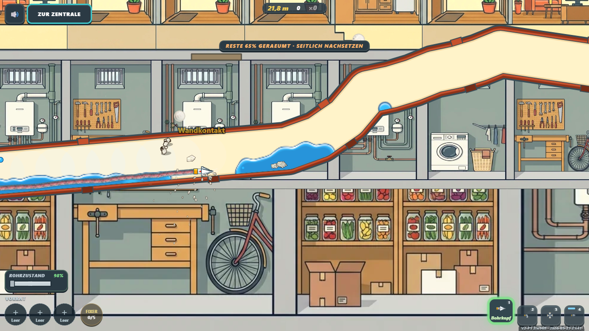
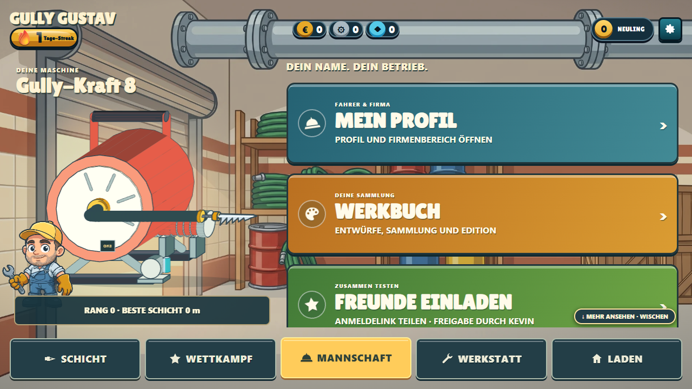

Gully GustavPressekontakt ↗
Gully GustavPressekontakt ↗PRESSE & MATERIAL · SEPTEMBER 2026
Handwerk.
Spieltrieb.
Dein Betrieb.
Ab in die Rohre: Gully Gustav bringt Rohrreinigung auf den Bildschirm – und den Wettbewerb zwischen Betrieben ins Spiel.
Geschlossene Testphase · Spielbilder aus der Testversion

DAS SPIEL IN KÜRZE
Wenn das Rohr
zum Spielfeld wird.
Gully Gustav macht Rohrreinigung zum Spiel: Werkzeug wählen, Hindernisse angehen und sehen, was der eigene Versuch bringt. Hinter dem Projekt steht die DrainX GmbH aus Hamburg. Ein zentrales Thema ist das Antreten für den eigenen Betrieb gegen andere Firmen. Das Spiel befindet sich in einer geschlossenen Testphase.
Pressetext & Fakten als Textdatei ↓- Projekt
- Gully Gustav
- Hintergrund
- DrainX GmbH · Hamburg
- Stand
- Geschlossene Testphase
- Zugang
- Im Browser, nach Anmeldung
- Sprache
- Deutsch
- Veröffentlichung
- Termin noch nicht angekündigt
FÜR DIE EIGENE FIRMA ANTRETEN
Dein Betrieb gegen die anderen.
Der Wettbewerb zwischen Firmen ist ein zentraler Schwerpunkt von Gully Gustav. Gemeinsam mit dem eigenen Betrieb antreten, sich mit anderen messen und die nächste Revanche spielen: Handwerk wird zum Gesprächsthema nach Feierabend.
In der Testversion vorhanden: „Fahrer & Firma“ sowie die Meistertafel mit „Gesamt“, „Meine Firma“ und „Betriebe“. Die konkrete Firmenwertung wird im Test erprobt.
ECHTE EINBLICKE
So sieht die Testversion aus.




Aufnahmen vom 28.09.2026. Bildnachweis: Gully Gustav / DrainX GmbH. Die Menüdarstellung zeigt kein laufendes Firmenmatch.

PRESSEKONTAKT
Mehr über Gustav?
Fragen zum Projekt, Interviewanfragen und Wünsche zu Bildmaterial:
support@gullygustav.deAnbieter: DrainX GmbH, Hamburg.
Nutzungsfragen zu den Materialien bitte an den Kontakt oben richten.
Die Rohre selbst erkunden
Gully Gustav ist im geschlossenen Test. Interessierte melden sich als Tester an und spielen direkt danach im Browser mit.
Als Tester anmelden ↗